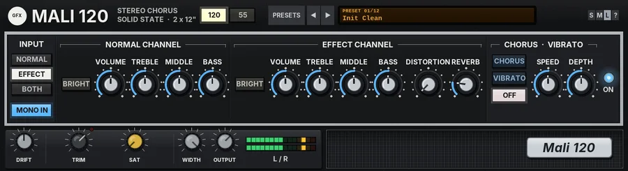

Mali 120
A stereo solid-state chorus combo with two channels, fizzy distortion, spring reverb and a smaller 55 model.

Overview
Mali 120 is a solid-state combo in the spirit of the famous late-70s stereo chorus amps: clean, glassy and wide, with two 12-inch speakers each driven by its own power amp. The sound is designed from scratch.
Its signature is the stereo trick. In CHORUS, the left speaker plays the amp dry and the right speaker plays a bucket-brigade, pitch-modulated copy, so the chorus happens in the air between the two speakers rather than inside the amp. In VIBRATO both speakers carry the modulated signal, for a true pitch wobble.
There are two channels. NORMAL is the clean, glassy channel, with its own tone controls and BRIGHT. EFFECT has the same tone controls plus a fizzy op-amp DISTORTION, a short, bright spring REVERB and the chorus and vibrato. The power amps are very clean, solid-state stages that only clip hard at the very top.
The 120 / 55 switch turns it into the smaller sibling: a single-channel combo with two 8-inch speakers, less headroom and a fixed chorus. Whatever the 55 does not have is greyed out on the panel.
Reach for it for
- Shimmering clean guitar chords and arpeggios
- Wide stereo chorus on electric pianos and synths
- New-wave and funk clean tones
- Pitch vibrato on keys and guitars
- Thin, fizzy solid-state drive
- Short, bright spring reverb
Controls
The header
- 120 / 55
- The model. 120 (the default): two channels, two 12-inch speakers, the full set of controls. 55: the smaller single-channel combo, with two 8-inch speakers (less bass, more mid), lower headroom, a slightly different mid voicing and a fixed chorus. The name and the speaker legend change with the model. See The 55 below.
- PRESETS
- Opens the list of the 12 presets, plus Reset all to defaults at the bottom.
- ◄ / ►
- Step to the previous or next preset (wrapping round).
- Display
- Shows PRESET and its number over the preset name. Click it for the preset list too.
- S / M / L
- Panel size: small, medium or large. The panel also scales to fit the plugin window. A new instance opens at the large size.
- ?
- Opens a pop-up with the design credit, the GFX website address and the address of this manual. Click anywhere to close it.
INPUT
- NORMAL / EFFECT / BOTH
- Which channel the signal goes into: NORMAL, EFFECT (the default) or BOTH, the two channels jumpered together and summed, each with its own settings. 120 only.
- MONO IN
- On by default: the left and right inputs are summed into one amp, the classic set-up, and the stereo comes from the speakers (dry left, chorus right). Off: left and right each go into their own identical amp with linked controls, and in CHORUS each side mixes its own chorus with its dry signal, the two sweeps a quarter cycle apart. Use it off for stereo sources such as keyboards.
NORMAL CHANNEL
The clean, glassy channel. It goes straight to the speakers: the chorus, vibrato and reverb are on the EFFECT channel only. 120 only.
- BRIGHT
- A treble lift around 2.4 kHz, about +7 dB at low VOLUME, easing to about +4 dB as you turn VOLUME up, like the bright switch on a real amp.
- VOLUME
- The channel's level, 0 to 10 (5 by default, about unity; 10 is +12 dB).
- TREBLE
- A treble shelf around 3.2 kHz, 0 to 10; 5 is flat, about 13 dB of cut or boost at the ends.
- MIDDLE
- A broad mid control around 750 Hz, 0 to 10; 5 is flat, about 10 dB of cut or boost at the ends.
- BASS
- A bass shelf around 110 Hz, 0 to 10; 5 is flat, about 13 dB of cut or boost at the ends.
EFFECT CHANNEL
The same tone controls as NORMAL, plus distortion and reverb; the chorus and vibrato work on this channel. On the 55 this is the only channel, labelled CHANNEL.
- BRIGHT
- As on the NORMAL channel. 120 only.
- VOLUME / TREBLE / MIDDLE / BASS
- As on the NORMAL channel, 0 to 10 each, 5 by default. On the 55 the MIDDLE control sits a little higher, around 900 Hz.
- DISTORTION
- A fizzy op-amp clipper, 0 to 10 (0 = off, the default). The treble is pushed into a hard clipper, run at twice the sample rate so it does not alias, then rounded off by the op-amp's own slightly peaky roll-off: thin, buzzy and bright, the solid-state sound rather than valve warmth. Between 0 and 0.5 it fades in. 120 only.
- REVERB
- The level of a short, bright spring reverb, 0 to 10 (2 by default). It comes before the chorus, so the chorus moves the reverb too. The two sides' springs differ a little.
CHORUS · VIBRATO
- CHORUS
- The fixed chorus: a gentle sweep with a rounded triangle shape. Dry in the left speaker, chorus in the right (with MONO IN on). The rate and depth are fixed, as on the original: about 0.7 Hz on the 120, a little faster and shallower on the 55.
- VIBRATO
- Both speakers carry the modulated signal: a pitch vibrato with a sine sweep, set by SPEED and DEPTH. 120 only.
- OFF
- No modulation (the default).
- SPEED
- The vibrato rate, 0 to 10 (5 by default): about 0.5 Hz to 10 Hz. VIBRATO only; it does nothing in CHORUS. 120 only.
- DEPTH
- The vibrato depth, 0 to 10 (5 by default): up to about 50 cents of pitch swing at 10. VIBRATO only. 120 only.
- ON lamp
- The power lamp.
The lower strip
- DRIFT
- 0 to 100% (50% by default). The supply wanders: the chorus rate and the bucket-brigade clock drift slightly, the power-amp rails move and sag a touch under load, and the distortion's bias shifts a little. 50% gives the standard drift, 100% doubles it, 0 turns it off (and the sag with it).
- TRIM
- Input level before anything else, from -24 to +12 dB.
- GUARD
- Off by default. Click the TRIM knob (without dragging) to switch it; the small LED at the knob's upper right shows it is on and glows brighter while it works. It gently eases very hot sources down towards about -18 dBFS average and catches fast peaks above -6 dBFS, so loud sources never overdrive the amp. It never boosts quiet sources.
- SAT
- Band saturation on the way out, 0 to 100% (0% by default): only the lows and highs are saturated (the mids stay clean), with a soft curve that loosens as the level rises.
- OUTPUT CLIP
- A soft clipper on the output (always on) catches overs at the ceiling.
- WIDTH
- The speaker spread, 0 to 100% (100% by default). 100% keeps the speakers fully apart, left and right; lower settings blend them, down to mono at 0%. Turn it down a little for headphones, where the full dry-left, chorus-right split can feel too wide.
- OUTPUT
- Output level, -24 to +12 dB.
- L / R meters
- Output level, left and right.
The 55
With 55 selected the panel stays the same, but what the smaller amp lacks is greyed out and does nothing: the INPUT keys (the signal always goes into the single channel), the whole NORMAL CHANNEL, both BRIGHT keys, DISTORTION, VIBRATO and its SPEED and DEPTH. The CHORUS key simply switches the fixed chorus on and off. MONO IN, the channel's VOLUME, TREBLE, MIDDLE, BASS and REVERB, and the lower strip all still work. The 55 has less headroom, so its power amps reach their limit sooner, and its two 8-inch speakers give less bass and more mid than the 120's 12-inch pair.
In REAPER's parameter list only
- Bias / Sat low band / Sat high band / Ceiling
- The rest of the output stage: the saturation's even-harmonic bias, where its low and high bands start (40 - 400 Hz and 2 - 16 kHz) and the clip ceiling (-0.3 dB by default).
Knobs: drag up or down (Shift for fine moves), or use the mouse wheel; the value shows below a knob while you touch it. Double-click a knob to reset it to its default.
Presets
Presets set the model, the input, MONO IN, both channels, the modulation and WIDTH. OUTPUT, DRIFT and the IN / OUT strip are left as they are; Reset all to defaults (at the bottom of the list) also puts those back.
- Init Clean
- The 120 into the EFFECT channel, everything at 5, a little reverb, no modulation.
- Glass Clean
- More treble and a touch more mid, less bass, BRIGHT on and a little more reverb: the glassy clean sound.
- Stereo Chorus
- The classic: the fixed chorus, dry left and chorus right, with a touch more treble.
- Deep Chorus
- Chorus with more bass, less treble, BRIGHT on and plenty of reverb: lush and wide.
- Vibrato Warble
- VIBRATO at a slow-ish speed and a little more depth: a seasick pitch wobble.
- New Wave Clean
- Bright and scooped (treble up, mid and bass down, BRIGHT on) with chorus and reverb.
- Funk Rhythm
- The NORMAL channel only, with BRIGHT on, more treble and mid, less bass: dry, tight and cutting.
- Fizz Drive
- DISTORTION at 6 with a mid push, chorus and reverb: the thin, buzzy solid-state lead.
- Keys Chorus
- Voiced for electric piano and synths: a touch less mid, more bass, chorus and reverb.
- Keys Vibrato
- For stereo keyboards: MONO IN off, VIBRATO with a gentle depth, more bass.
- 55 Clean
- The 55, a touch more treble and reverb, no chorus.
- 55 Chorus
- The 55 with its fixed chorus and a little more reverb.
Tips
- For the full stereo effect, keep MONO IN on and WIDTH at 100%: the chorus then lives only in the right speaker and blends in the room.
- On headphones, or if the chorus sounds lopsided, bring WIDTH down to around 60 - 80%.
- For stereo keyboards, switch MONO IN off so the source keeps its own stereo image.
- Use BOTH to blend the clean NORMAL channel with a distorted or chorused EFFECT channel, setting the balance with the two VOLUME knobs.
- DISTORTION is bright by nature: pull the EFFECT channel's TREBLE down a little to tame the fizz.
File: gfx-mali-120.jsfx